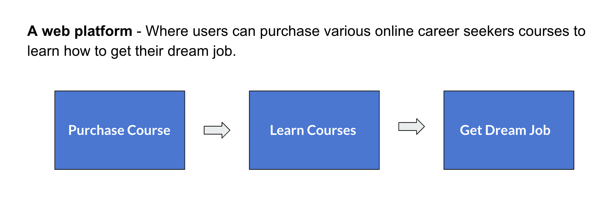

ABOUT SUPER PURPOSES
Super Purposes™ is a career coaching and advice program built for the 21st century and today's job market. Super purposes helping millions of people find the jobs and careers of their dream, within 12 weeks of online Programs.
METHODS
Competitive analysis, Market Research, Design feature research, Sketching, User flows, High fidelity mockups.
TOOLS
Skype for communication, Google Suite, Figma.
CLIENT
Super Purposes (Here is the link Superpurposes.com)
TIMELINE
5 Months (Sep 2020 - Jan 2020).
STATUS
Under developement
MY ROLE
We are UX design team of 5 Members designing super purposes online learning platform website. As a part of UX Design team my role is closely working with the UX Designers, Web developers, Market specialists, stakeholders to understand website needs and requirements to design websites login screens, My learning screens, profile screen. Performed competitive analysis on design features with other four online learning platform to find out latest design features and modify them and come up with new design features to apply those design features to improve our design. Conducted 8 times of iterations with the stakeholders and web developers and remaining UX team members on designed course login screen, My learning screens, profile screen to improve website design screens.
DESIGN PROCESS

DESIGN CHALLENGE
Access to the courses : various career coaching and advising courses to land a dream job.
Flexibility in learning : Completely online and can learn from anywhere and anytime.
Pricing : affordable for everyone to purchase and learn.
SOLUTION
OUTCOMES
Designed the My Learning screens that showcase the users course progress.
Reduce the course access time by Design and develope the user flow that showcase user can access the course easily.
Increase the number of users registered for the online course.


These designs are under development. We are discussing with the developers to bring this high mockups to be published soon.
Super purposes is my first internship and I am having a wonderful experience working on projects. As a UX Designer, I am not only focusing on the tasks that are provided during the internship. Also I do have a freedom of opportunity to explore more side projects and we can learn every aspect of the company and we can have a chance to participate on each and every company related tasks. As part of exploring the size projects I was a part of marketing and future comparison team members where I learned exciting things that are done on competitor analysis to identify weaknesses and strengths of the company. Also we can do a design feature competitor analysis so we can create outstanding results on high fidelity mockups as well as user flows.